Bine ați venit în Maroc!
Marocul, o țară a contrastelor fascinante, ne-a întâmpinat cu un amestec vibrant de cultură, istorie și peisaje diverse. De la albastrul intens al Medinei din Chefchaouen, la forfota piețelor din Marrakech și eleganța modernă din Casablanca, fiecare oraș imperial și-a spus propria poveste.
Regatul Maroc este o țară cu o istorie bogată, faimoasă pentru Orașele sale Imperiale (Fes, Marrakech, Rabat, Meknes), pentru munții Atlas și pentru deșertul Sahara. De la tradiție, până la cosmopolit. De la mirosul condimentelor din piețele tradiționale, până la mirosul străzilor urbane încinse de forfotă și soare. Bazaruri colorate, muzică orientală, palmieri, palate specifice lumii musulmane și exotism nord African la superlativ. Descoperă-le pe toate, de la început până la sfârșit, din Marrakech până în Casablanca. Totul e autentic și frumos, de văzut cel puțin o dată în viață.
Această călătorie s-a concentrat pe medinele vibrante, arhitectura islamică impresionantă și ospitalitatea locală. Urmează jurnalul meu, pas cu pas, de la Gibraltar la Djemaa El Fna!
Albastru Chefchaouen
✨ Fereastra către Chefchaouen ✨
Înainte de a ne scufunda în itinerar, plasați cursorul peste fereastra de mai jos! Descoperiți magia culorii *Albastru Chefchaouen* printr-o simplă tranziție.
Hover pentru a simți magia culorii!
Orașele Imperiale și Culorile Lor
Itinerar pe Zile
Ziua 1: Gibraltar & Tangier
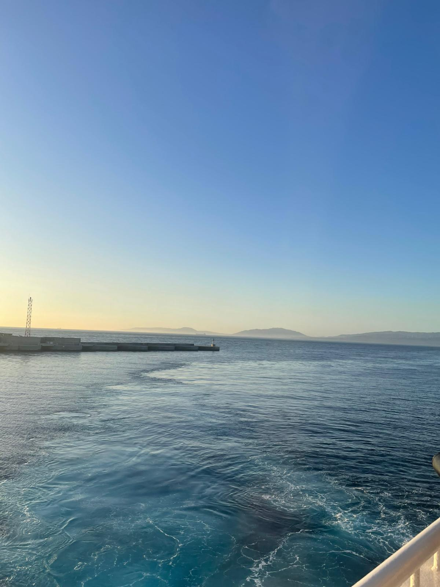
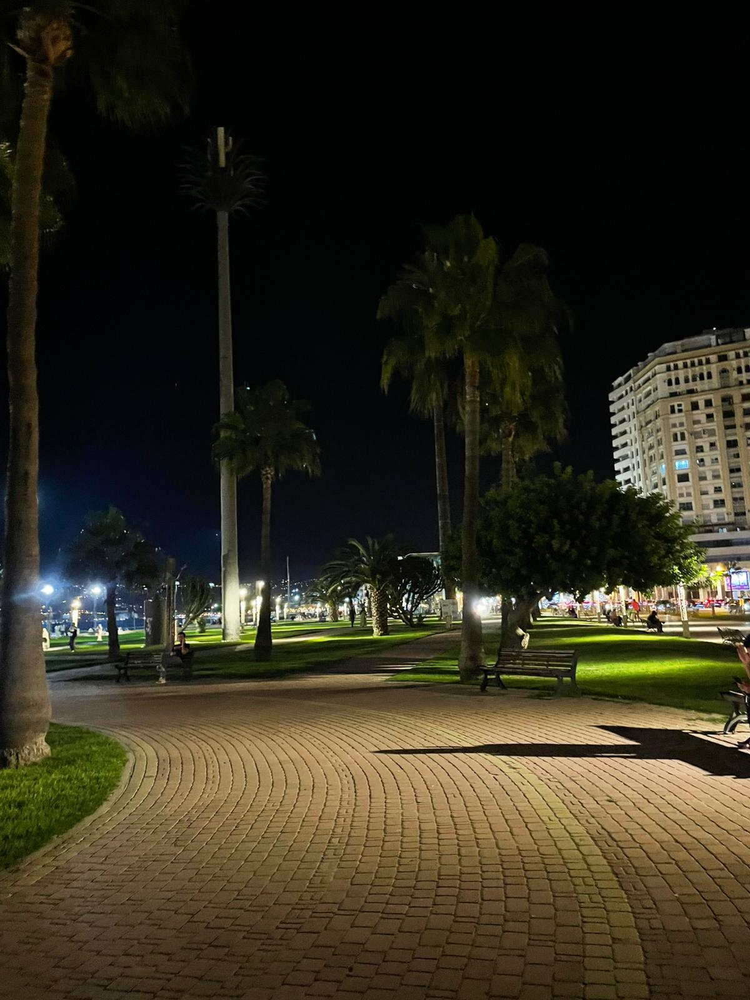
Ziua începe cu trecerea intercontinentală din Europa în Africa, urmată de explorarea imediată a orașului Tangier.
Veți pleca cu feribotul dintr-unul dintre porturile spaniole apropiate de Gibraltar, cel mai adesea Tarifa sau Algeciras. Obiectivul principal este traversarea Strâmtorii Gibraltar, punctul strategic unde Marea Mediterană se întâlnește cu Oceanul Atlantic. Traversarea cu feribotul de mare viteză durează, în general, în jur de o oră.
Tangier este un oraș vibrant, cunoscut istoric ca "Oraș Internațional", fiind un amestec bogat de influențe marocane, spaniole, franceze și portugheze.
- Explorați labirintul de alei înguste din Orașul Vechi (Medina). Vizitați Kasbah-ul, fosta fortăreață, care oferă vederi panoramice uimitoare asupra portului și, în zilele senine, a coastei spaniole.
- Mergeți la cel mai nord-vestic punct al Africii. Aici puteți vedea farul istoric și, simbolic, locul de întâlnire dintre Marea Mediterană și Oceanul Atlantic.
- Vizitați Peșterile lui Hercule, o atracție naturală faimoasă pentru deschiderea sa, care se spune că seamănă cu forma Hărții Africii.
- Plimbați-vă prin Grand Socco, piața principală care separă vechiul de noul oraș, și prin Petit Socco, o piață mai mică, plină de viață, cu cafenele istorice, situată în inima Medinei.
Ziua 2: Chefchaouen
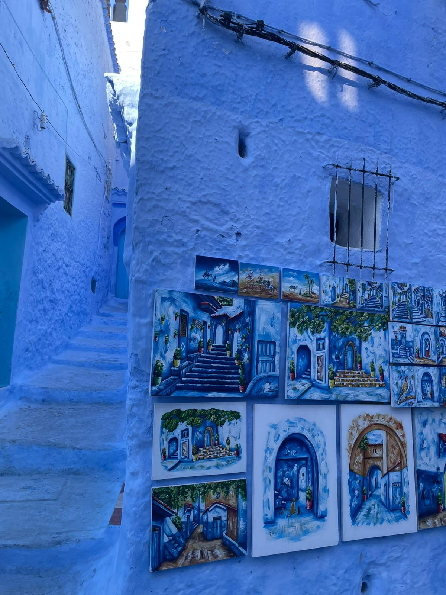
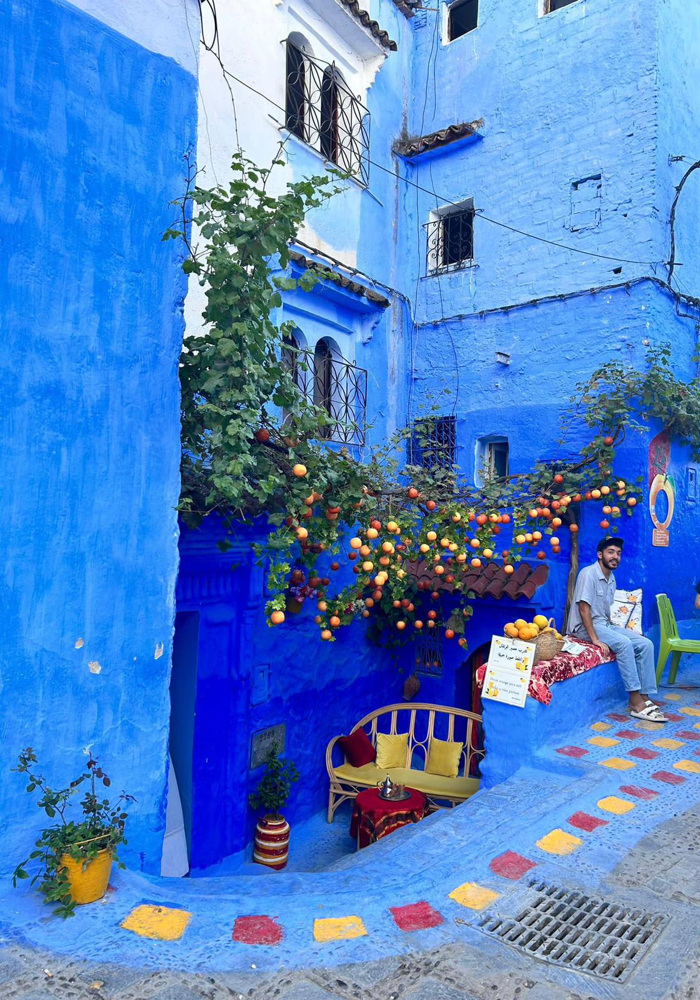
Ziua este dedicată explorării medinei (orașului vechi), renumită la nivel mondial pentru toate nuanțele de albastru cu care sunt vopsite clădirile sale.
Explorarea Medinei (Orașul Albastru)
- Piața Uta el-Hammam: Începeți ziua în piața centrală, inima orașului vechi. Aici veți găsi Marea Moschee (Grand Mosque) cu minaretul său octogonal, neobișnuit pentru Maroc. Este un loc ideal pentru a savura un mic dejun marocan la una dintre terase.
- izitați fortăreața veche, restaurată, situată în piața principală. Puteți urca în turnul de observație pentru a admira o vedere panoramică superbă asupra medinei albastre și a munților Riff din jur. De asemenea, Kasbah-ul găzduiește un mic muzeu etnografic.
- Dedicați-vă timpul rătăcirii pur și simplu pe străduțele medinei. Nu vă temeți să vă pierdeți – cele mai fotogenice și liniștite colțuri sunt adesea ascunse. Căutați poarta Bab el-Ain și zona din jurul acesteia.
- Înainte de apus, faceți o scurtă drumeție (aproximativ 30-45 de minute) pe dealul de vizavi de oraș, unde se află o moschee mică și abandonată, cunoscută sub numele de Moscheea Spaniolă (Jemaa Bouzafar). Acesta este cel mai bun punct de belvedere pentru a admira Orășelul Albastru în totalitatea sa, la lumina caldă a apusului.
Ziua 3: Fes
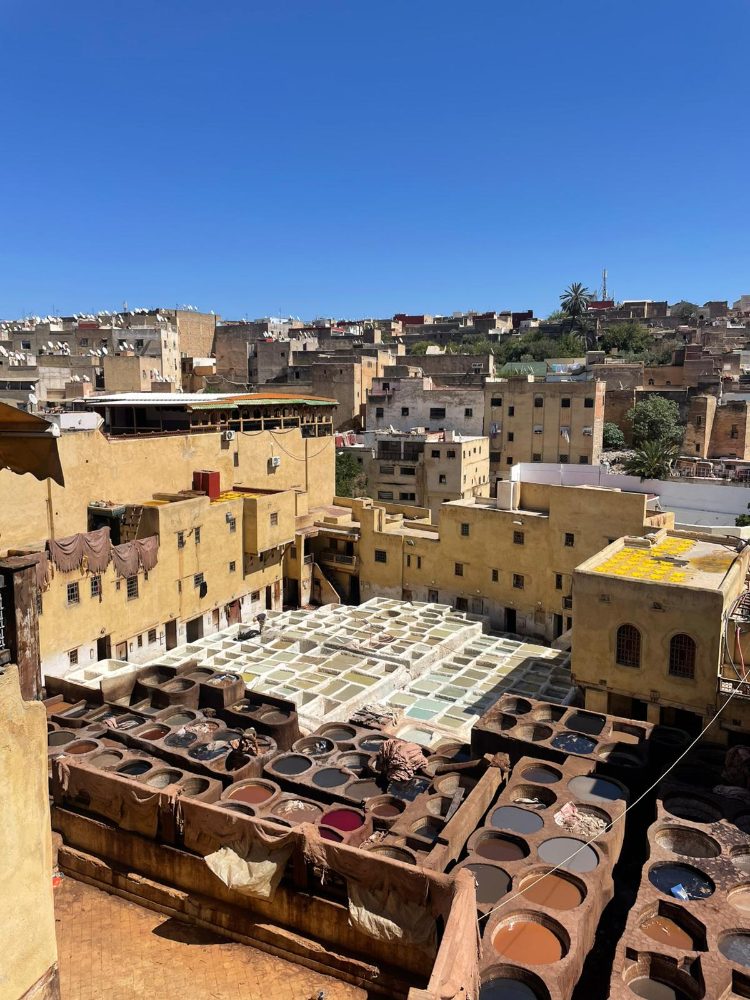
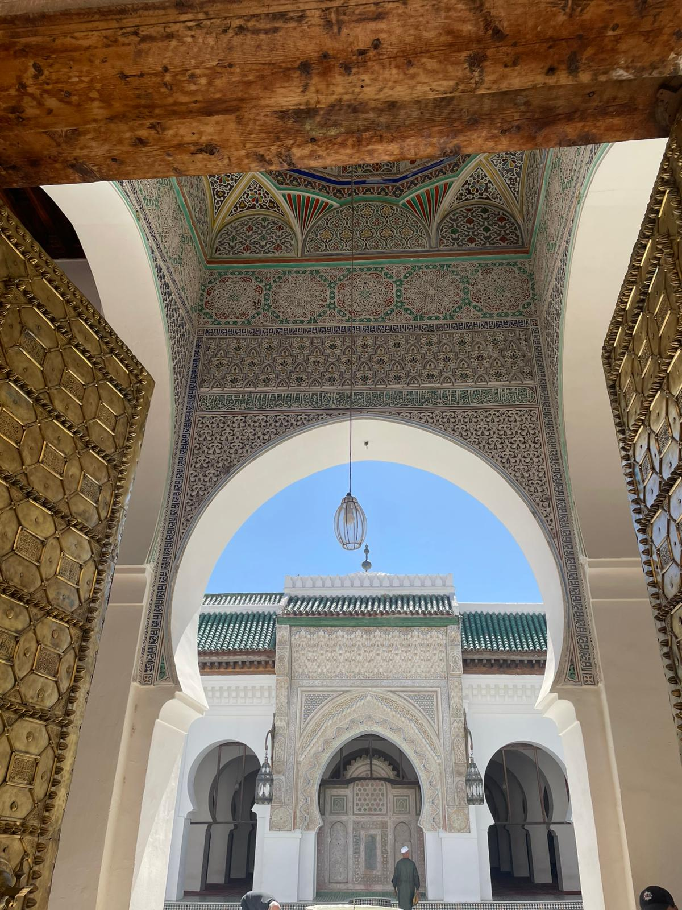
Fes este cel mai vechi dintre orașele imperiale, considerat capitala culturală și spirituală a Marocului
- Începeți explorarea prin faimoasa poartă albastră, decorată cu mozaicuri pe ambele părți, care marchează intrarea principală în medină.
- Universitatea Al-Quaraouiyine: Cea mai veche universitate din lume care funcționează continuu. Deși nu se poate intra în curtea principală, puteți admira fațada sa și arhitectura impresionantă.
- Tăbăcăriile Chouara: Aceasta este, probabil, cea mai faimoasă imagine din Fes. Vizitați una dintre terasele magazinelor de pielărie din jur pentru a vedea procesul tradițional de vopsire a pieilor. Vă recomandăm să folosiți mentă pentru a diminua mirosul puternic.
- Admirați fântâna publică Nejjarine, superb decorată, și vizitați Muzeul de Artă și Meșteșuguri din Lemn, situat în apropiere, într-un fost fondouk (han).
Ziua 4: Volubilis & Rabat
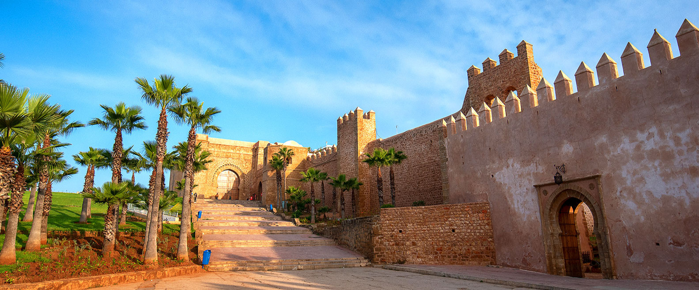
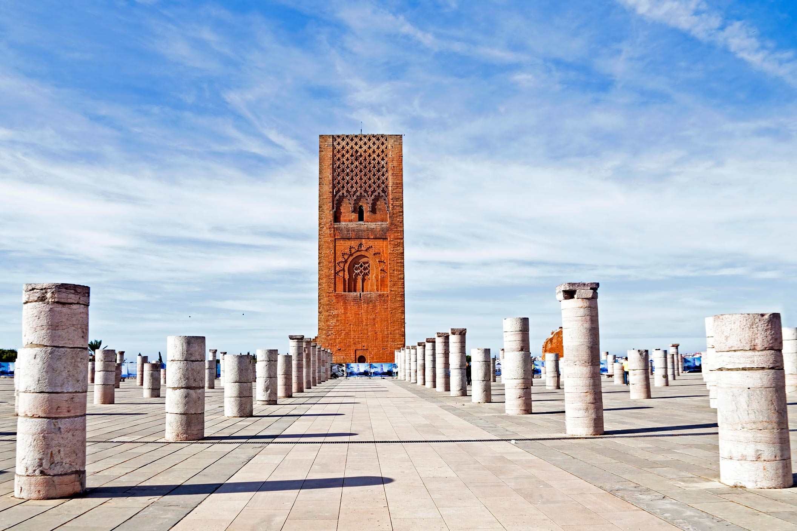
Această zi oferă un contrast puternic, începând cu explorarea celui mai bine conservat sit roman din Maroc și încheindu-se cu vizita capitalei administrative a țării.
- Arcul lui Caracalla: Un arc de triumf impresionant, care marchează intrarea pe strada principală a orașului.
- Basilica și Templul Capitolin: Vedeți structurile publice centrale ale vechiului oraș.
- Mozaicurile: Volubilis este faimos pentru mozaicurile sale frumos conservate, în special cele din casele private precum Casa lui Orfeu și Casa lui Dionisos.
După vizita la Volubilis, vă deplasați spre coasta Atlanticului, în Rabat, capitala modernă a Marocului.
- Turnul Hassan (La Tour Hassan): Simbolul orașului, este minaretul neterminat al unei moschei imense planificate de Sultanul Yacoub al-Mansour. Lângă el se află Mausoleul lui Mohammed al V-lea, un loc de o solemnitate și eleganță deosebită.
- Kasbah des Oudaias: Această veche fortăreață, așezată deasupra estuarului râului Bouregreg, este un mic cartier rezidențial pitoresc vopsit în alb și albastru (asemănător cu Chefchaouen, dar la scară mai mică).
- Orașul Nou (Ville Nouvelle): Explorați bulevardele largi ale orașului modern, planificat în timpul Protectoratului Francez. Aici se află reședința regală (Palatul Regal) și clădirile guvernamentale.
Ziua 5: Casablanca

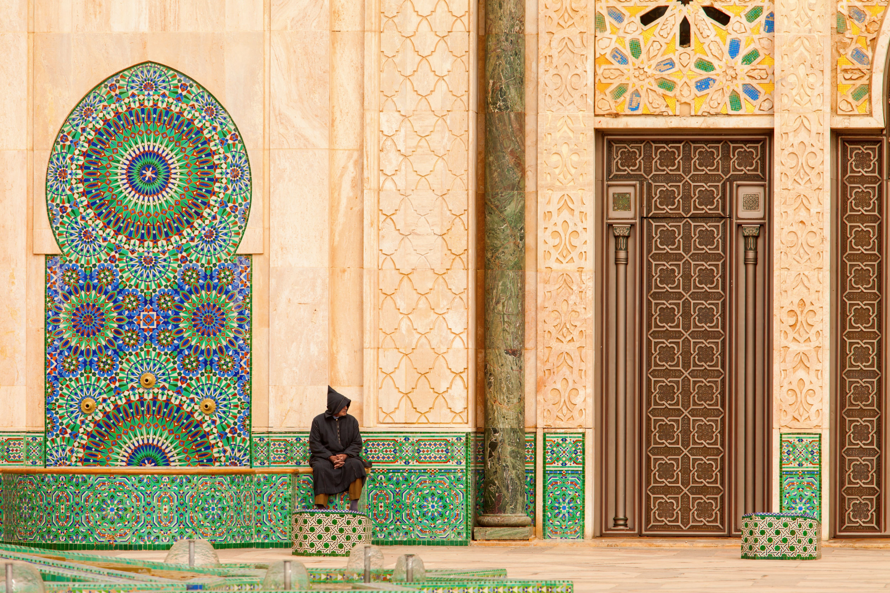
Casablanca este centrul economic al Marocului, oferind un contrast modern față de medinele istorice vizitate anterior. Ziua este dedicată explorării arhitecturii sale impresionante și a coastei Atlantice.
- Moscheea Hassan al II-lea: Acesta este obiectivul principal și de neratat. Este cea mai mare moschee funcțională din Africa și una dintre cele mai mari din lume. Este renumită pentru minaretul său impresionant și pentru faptul că o parte din structura sa este construită deasupra Oceanului Atlantic.
- Cartierul Habous (Noua Medina): Deși este mai nouă (construită în anii 1930), oferă o atmosferă tradițională, dar mult mai ordonată și curată. Este un loc excelent pentru a cumpăra artizanat fără agitația medinelor vechi.
- Piața Mohammed al V-lea: Inima orașului, înconjurată de clădiri administrative în stil neo-maur (o combinație de arhitectură locală și europeană).
Ziua 6: Marrakech
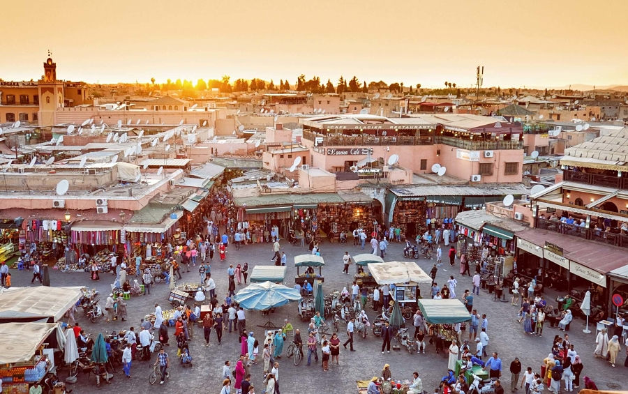
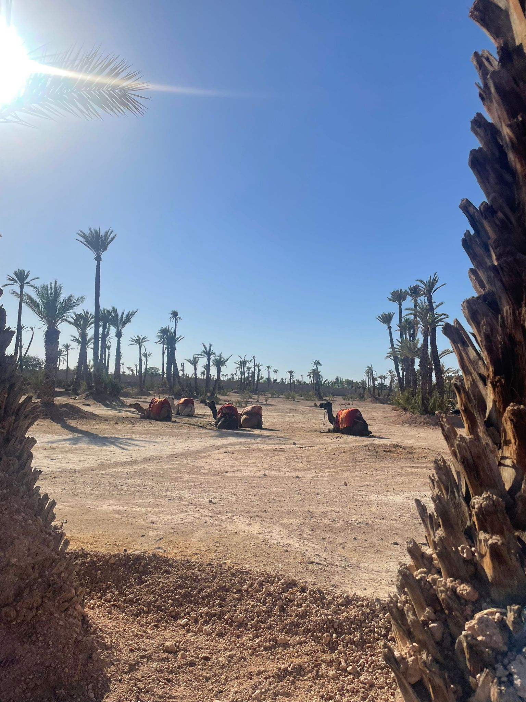
Marrakech este un oraș imperial celebru pentru culoarea sa roșiatică, piețele sale vibrante și grădinile luxuriante.
- Palatul Bahia: Începeți cu vizita acestui palat impresionant, care reflectă arhitectura marocană din secolul al XIX-lea. Este renumit pentru curțile sale ample, mozaicurile zellige și plafoanele pictate din lemn de cedru.
- Grădina Majorelle (Exterior): Vizitați faimoasa grădină creată de artistul francez Jacques Majorelle și restaurată de Yves Saint Laurent. Este renumită pentru fântânile, cactușii exotici și clădirile vopsite în nuanța distinctivă de Albastru Majorelle.
- Moscheea Koutoubia: Admirați exteriorul celei mai mari moschei din Marrakech. Minaretul său este un reper arhitectural emblematic al orașului și un excelent punct de orientare.
- Cartierul Gueliz (Orașul Nou): Vizitați partea modernă a Marrakech-ului, unde se află restaurante, galerii de artă și magazine de lux, oferind un contrast plăcut față de medina veche.
Ziua 7: Retur
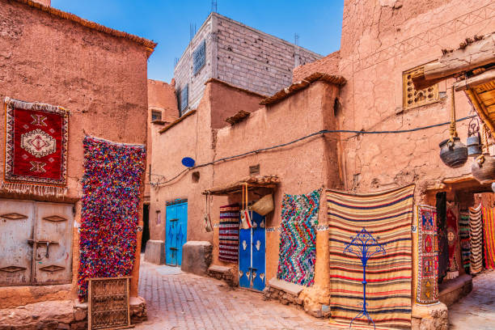
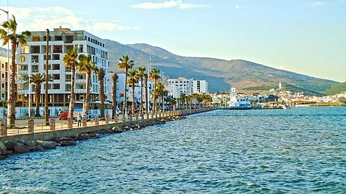
Ultima zi este rezervată transferului către aeroport și reflecției asupra călătoriei. De obicei, plecarea se face de pe aeroportul care oferă cele mai bune conexiuni internaționale, cel mai adesea Marrakech sau Casablanca.
Galerie Foto
O colecție de fotografii reprezentative din călătorie:
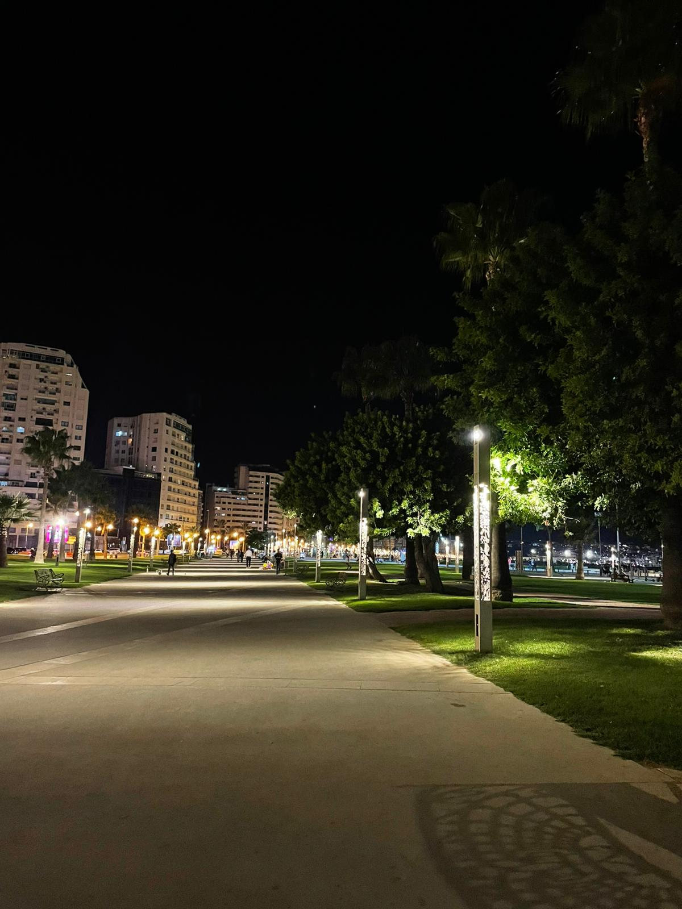
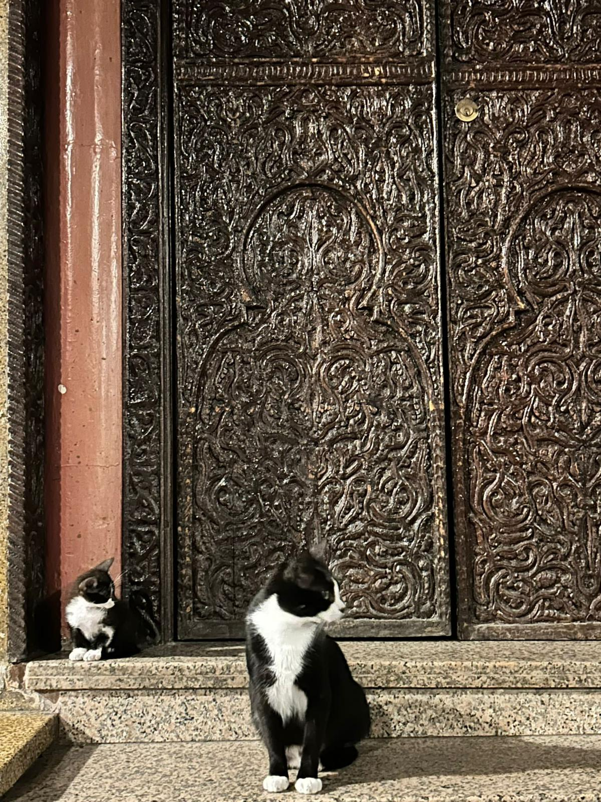
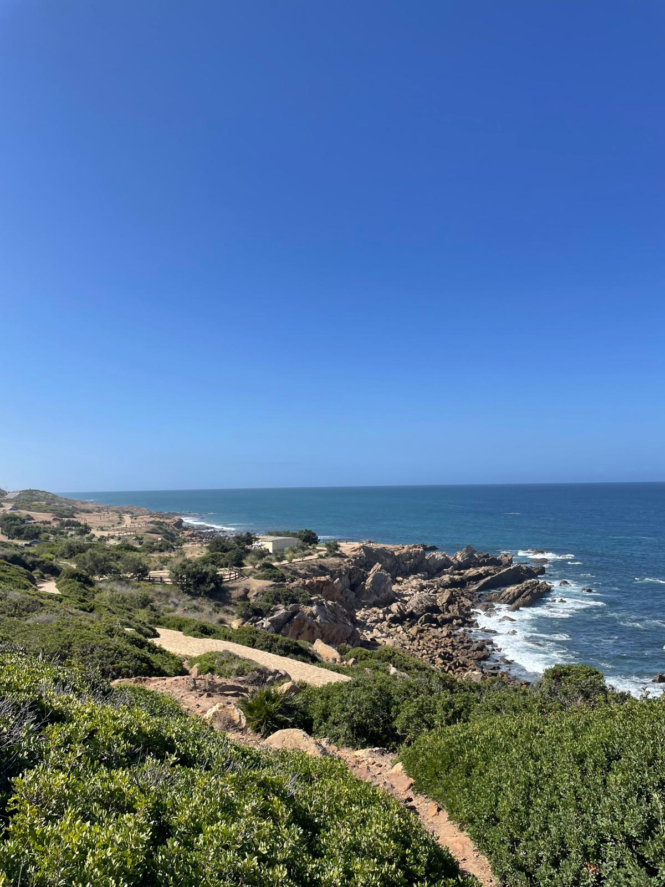
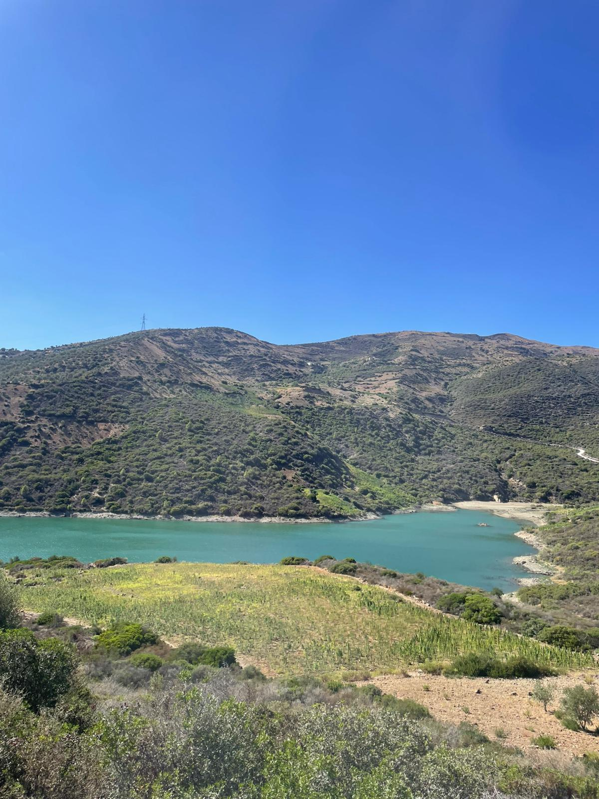
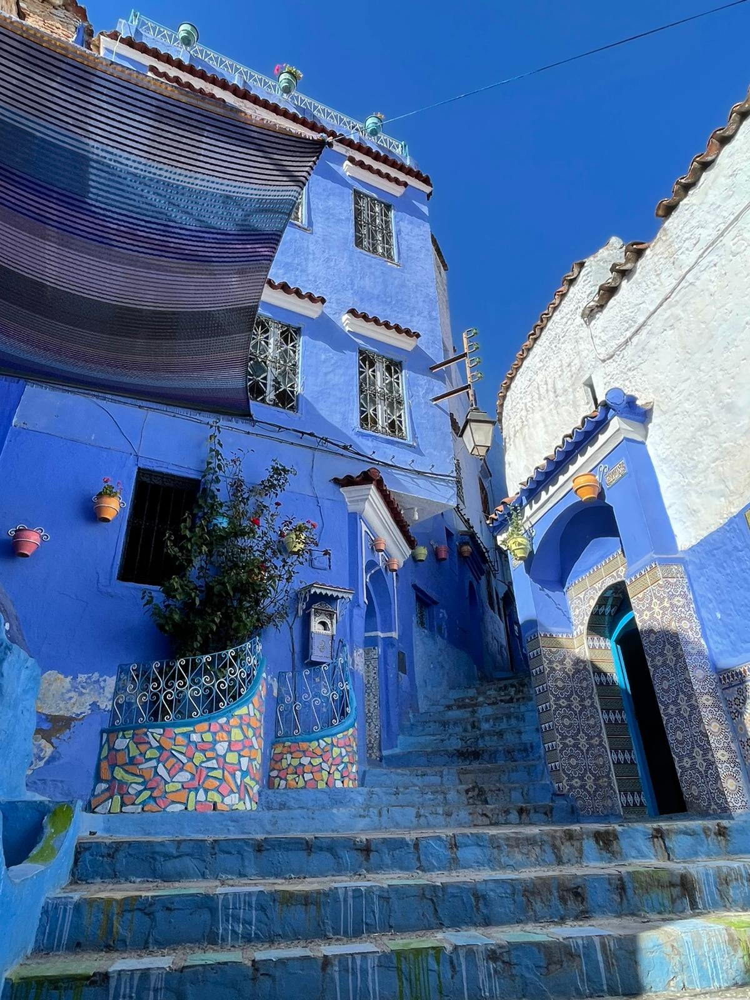
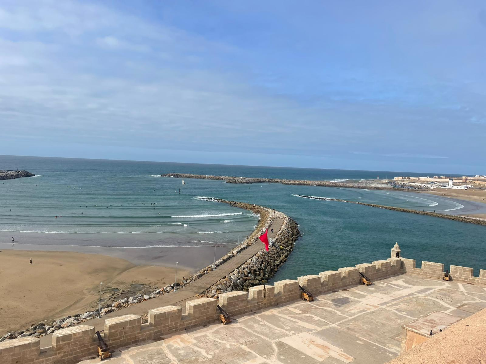
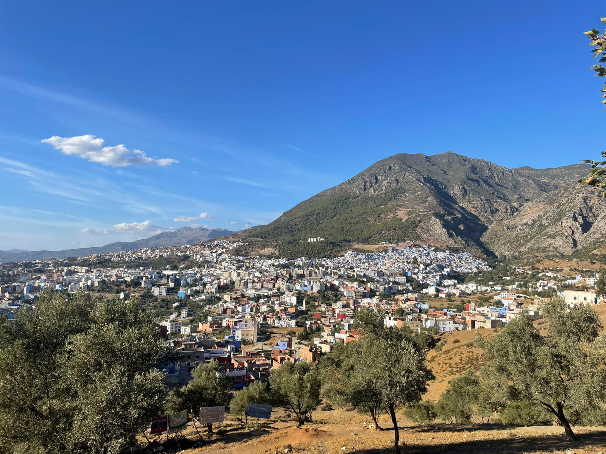
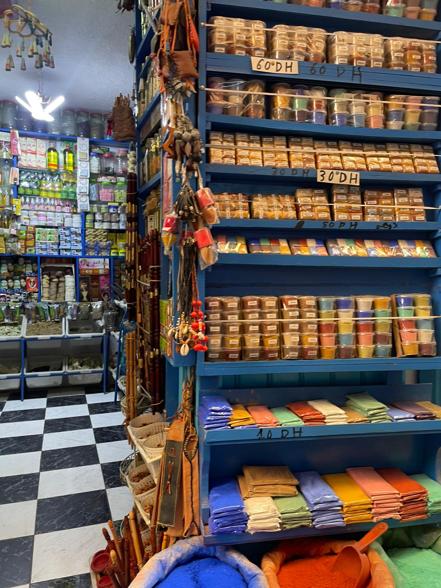